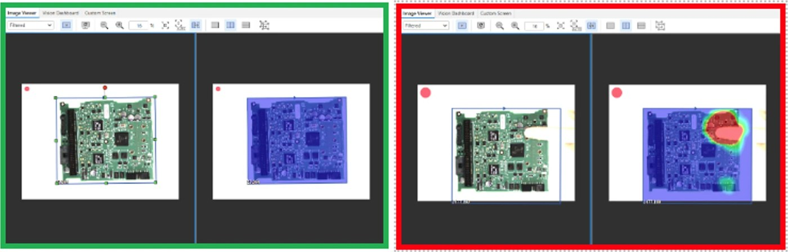

Quality Engineering Co-op
AvtechTyee · January 2026 – June 2026
Overview
During my 6 months as a Quality Engineer at AvtechTyee, an aerospace manufacturer, I worked on two projects. The first replaced manual incoming inspection of circuit board assemblies with an automated machine vision system. The second was a model that predicts which suppliers are most likely to cause quality problems, built on 7 years of historical data.
Machine Vision Inspection
Incoming inspection of circuit board assemblies was manual. An inspector compared each board against documentation by eye, which is slow and depends on who is working that day. A board that passes inspection while carrying a defect is far more expensive to find later in the build, so the cost of a miss is high.
I set up a Keyence VS-series vision system to do the comparison automatically. The camera mounts on an adjustable arm over a fixed inspection stage, so board position and lighting stay consistent between units. Each board type gets a program that captures reference images and compares incoming units against it.
Differences show up as a heat map over the board. A unit that matches the reference passes. A unit with a defect such as missing component, backwards component, or foreign material appears as a region of disagreement, and the operator sees the location rather than just a pass or fail result.

I programmed the system for 25+ board types, wrote the programming and operating guides, and trained the inspectors to run and extend it themselves.
Supplier Risk Model
The second project was predicting supplier quality problems before they turned into nonconformance reports, using seven years of history at supplier-month granularity.
The hard part was defining the target. "This supplier is getting worse" is easy to say and difficult to write down. I settled on a trend label: a supplier is positive for a given month if their nonconformance rate over the next three months is at least 1.5 times their rate over the previous three.
That definition on its own produced a lot of noise. A supplier with zero reports in the past three months and one in the next three is mathematically a large increase but operationally close to nothing at all. Requiring a minimum count in the forward window removed most of those false positives.
# "Trend up" means future_avg >= multiple * past_avg.
label_window: int = 3
trend_multiple: float = 1.5
# Minimum total reports in the future window required to count as a
# positive trend. Filters out noise positives where a supplier had 0 in
# the past 3 months and then 1 in the next 3 (mathematically a positive
# trend but operationally just normal variation).
min_future_sum: int = 2The classifier is a histogram gradient boosting model, with a logistic regression kept alongside it as a simpler baseline to measure against. Both run through the same preprocessing pipeline. Predictions are calibrated so the output reads as an actual probability rather than only a ranking, which matters because the threshold is a business decision about how many suppliers the team can review.
I tested both calibration methods. With roughly ten positives per fold, sigmoid calibration compressed nearly every prediction toward the base rate. Isotonic gave a slightly better Brier score and a wider spread, which is what makes threshold tuning possible at all.
hgb = CalibratedClassifierCV(
estimator=hgb_inner,
method="isotonic",
cv=n_folds,
)Validation is a walk-forward backtest rather than a random split. A random split would let the model train on later months and score earlier ones, which inflates the result and would not survive contact with real use.
Source is on GitHub at supplier-risk-model.
Results
The top 5% of suppliers by predicted risk failed 1.6 times more often than a random selection of the same size. I delivered it as a desktop tool with an Excel dashboard while complying with IT policies so the quality team could run it monthly without touching Python. It is now used in monthly reviews covering 150+ suppliers.
The vision system replaced manual incoming inspection across 25+ circuit board types, saving an estimated $100K per year in scrap, labor, and defect cost.